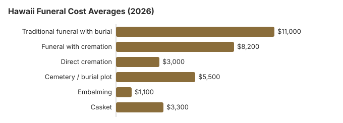

Funeral Costs in Hawaii: What Families Pay in 2026
Our 2026 Hawaii estimates put a traditional service near $11,000 and direct cremation near $3,000. The $8,000 between them pays for embalming, a casket, a viewing and a service, and in Hawaii a plot near $5,500 comes on top.
Hawaii Funeral Charges in Detail
The state licenses mortuaries but leaves prices to them, so quotes on Oahu and the neighbor islands can differ widely.
| Arrangement | Our estimate | Likely spread |
|---|---|---|
| Traditional funeral with burial | $11,000 | $8,250 – $14,300 |
| Funeral with cremation | $8,200 | $6,560 – $10,660 |
| Direct cremation | $3,000 | $2,100 – $4,200 |
| Cemetery / burial plot | $5,500 | $2,750 – $11,000 |
| Embalming | $1,100 | $500 – $1,500 |
| Casket | $3,300 | $1,100 – $8,800 |
Read this first: no Hawaii mortuary was surveyed for these lines. They are modelled estimates for budgeting, not a quote and not professional advice; our method and disclaimer spell out the limits.
State sources: Hawaii Department of Commerce and Consumer Affairs (DCCA); Haw. Rev. Stat. § 346-15; HAR ch. 17-1745; HRS §441-22.6; §441-22.5.

Hawaii Charges That Catch Families Out
- An embalming fee described as compulsory. Hawaii law seldom requires it.
Hawaii Funeral Assistance
- Social Security: $255, once, to a qualifying spouse or child who claims within two years.
- Installments: a few Hawaii mortuaries will spread the bill; ask for the interest rate in writing.
Educational Resources
- Payment Assistance GuideGovernment programs and financial help for funeral costs
- FTC Funeral RuleThe federal rule protecting funeral consumers
- Insurance Plan ComparisonCompare coverage, premiums, and payout speed across providers
- Best Burial Insurance CompaniesSide-by-side comparison of top burial insurance providers
- Funeral Consumers AllianceIndependent nonprofit consumer advocacy for funeral rights
- Funeral Insurance GuideCompare final expense and burial insurance options
Compare Funeral Costs
- Cremation vs. Burial Cost ComparisonSide-by-side price comparison to help you decide
- Direct Cremation: Most Affordable OptionNFDA 2023 median $2,645 with a family-supplied container (latest available)
- Cheapest Funeral OptionsLower-cost alternatives, with typical price ranges
- How to Compare Funeral PricesStep-by-step guide to getting the best price
- Average Funeral Cost in 2026National cost breakdown with real prices
- Funeral Cost BreakdownEvery line item explained: know what you're paying for
Hawaii Cremation and Burial Pages
Our two Hawaii follow-up pages:
Cremation Costs in Hawaii
Seven in ten Hawaii families choose cremation. Prices run from about $3,000 direct to $8,200 with a service, with urns and ocean scattering covered.
Burial Costs in Hawaii
A Hawaii burial adds a plot (about $5,500), casket, vault, marker and grave opening, for $25,250 to $29,750 in all.
Why Hawaii Funerals Cost More
Land, shipping and wages all cost more in the islands, which lifts Hawaii above the $8,300 US median. Honolulu quotes tend to run 10-30% above those in smaller towns, and caskets and vaults have to be shipped in.
Hawaii Buyers and the FTC Rule
Report a Hawaii mortuary that ignores the rule at ftc.gov; the nonprofit Funeral Consumers Alliance can also advise.
Spending Less on a Hawaii Funeral
| Choice | Approx. Cost | What you get |
|---|---|---|
| Direct cremation | $3,000 | Cremation only, no service; a permit is required but Hawaii has no waiting period (HRS §§ 338-23, 338-25). |
| Direct burial | $5,500 | Prompt burial, unembalmed and without a viewing; plot and opening are billed by the cemetery. |
| Green burial | $6,050 | No embalming and no vault, at the few Hawaii cemeteries that allow it. |
| Cremation + memorial | $8,200 | Cremation, then a memorial gathering |
| Traditional funeral | $11,000 | Viewing, service and burial |
Hawaii's Cremation-Heavy Market
With about 70% of Hawaii families choosing cremation, traditional funerals are now the minority. Mortuaries that still do many of them usually either serve a particular community or compete hard on price, so ask each provider how much of its work is cremation; the answer tells you a lot about its pricing posture in a state where 70% of families choose cremation.
Hawaii: Cremate or Bury?
Cremation
- About $3,000 for direct cremation
- About $8,200 with a service
- No plot needed
- Scattering at sea is common
- Chosen by 70% of Hawaii families
Traditional Burial
- About $11,000 for the service
- About $5,500 more for a plot
- Most cemeteries want a vault or liner
- A grave to visit
- Metal caskets: $2,500 is the US median (NFDA 2023 General Price List Study); in Hawaii, shipping adds to the price
Hawaii Prices by City
We have no source that prices a funeral in Honolulu, Hilo or Kailua separately, so those cards carry no figure. Hawaii's estimate of about $11,000 is the benchmark on every island until a provider's itemized list says otherwise. Cemeteries and pre-need funeral authorities are overseen by the cemetery and funeral trust program of the Professional and Vocational Licensing Division.
Arranging a Hawaii Funeral, Step by Step
Doing things in this order saves money and strain:
- Settle cremation or burial first: cremation in Hawaii or burial in Hawaii.
- Money help to check: Social Security benefits, veteran benefits, Medicaid assistance, or crowdfunding; plus the Hawaii Department of Human Services.
After a Hawaii death, our what to do when someone dies guide or printable checklist walk through the rest.
Hawaii death certificates: $10, then $4 a copy
Certified copies come from the Department of Health's Office of Health Status Monitoring in Honolulu. Under HRS § 338-14.5 the first copy of a certificate costs $10 and each further copy of the same record ordered at the same time costs $4. Online orders add a $2.50 portal fee for each block of up to five copies (Hawaii DOH, death certificates; checked October 29, 2026).
- Who may order: Hawaii restricts copies to people with a "direct and tangible interest", such as the spouse, a parent, a child or grandchild, a sibling, the estate's personal representative, or a joint owner of property. Photo ID and proof of the relationship are required.
- By mail: Office of Health Status Monitoring, Issuance/Vital Statistics Section, P.O. Box 3378, Honolulu, HI 96801. Mail orders must be paid by cashier's check, certified check or money order; personal checks and cash are refused.
- Fees are kept even when no record is found, so check the date and island of death before ordering.
Because extra copies are cheap here, it usually pays to order enough on the first request: five copies cost $26 by mail, against $50 if each were ordered on its own later.
Hawaii's licensing office, state burial aid and veterans cemeteries
Hawaii cemeteries and pre-need funeral authorities, the sellers of prepaid funeral plans, are licensed through the state's Hawaii Department of Commerce and Consumer Affairs (DCCA) (808-586-3000). Complaints against those licensees go to the DCCA's Regulated Industries Complaints Office at 808-586-2670.
A family can buy only the pieces it wants. Hawaii is not on the Funeral Consumers Alliance list of nine states that require a funeral director for some steps, and there is no fixed waiting period before cremation, only the permit (HRS §§ 338-23, 338-25).
Department of Human Services payments
When the person was receiving medical or financial assistance and did not qualify for Social Security's own death payment, DHS can pay a lump sum equal to it; for an unclaimed body DHS pays the mortuary, crematory or hydrolysis provider up to $1,600 (Haw. Rev. Stat. § 346-15; HAR ch. 17-1745). The application is due within 60 days of the death. Set beside our $11,000 traditional-funeral estimate, Social Security's $255 to a spouse or child barely registers.
Veterans on every island
The National Memorial Cemetery of the Pacific at Punchbowl (808-532-3720) now takes cremated remains only; the funeral home books it through the VA's National Cemetery Scheduling Office (800-535-1117). The state runs Hawaii State Veterans Cemetery in Kaneohe (808-369-3575) and island cemeteries on Kauai (808-241-4460), Lanai (808-565-7086), Maui (808-876-4534) and Molokai (808-553-3222), plus East and West Hawaii on the Big Island (both 808-961-8311). Families call those directly.
Bringing someone home from the mainland
Many Hawaii families face a death on the mainland. Shipping a body by air means a funeral home at each end plus airline cargo charges, while bringing cremated remains home can be done as carry-on or checked baggage under the airline's rules, which is usually far cheaper. Ask both funeral homes for a written quote before choosing.
Hawaii checklist
- Ask two or more mortuaries for written price lists, as HRS § 441-22.6 entitles you to.
- Do not agree to embalming until the home explains why your plans need it.
- If the person had state medical or financial aid, file with DHS inside 60 days.
- For a veteran, compare the state veterans cemetery on your island with a private plot.
- Cemetery or prepaid-plan price problems: DCCA complaints office, 808-586-2670.
Frequently Asked Questions
How much does a funeral cost in Hawaii?
On our estimates, about $11,000 for a traditional service, $8,200 for cremation with a service and $3,000 for direct cremation, with roughly $5,500 more for a plot. Price lists from two or three Oahu or neighbor-island mortuaries will show your real figure.
What does choosing cremation save in Hawaii?
At least $8,000. Direct cremation is about $3,000; a traditional funeral with burial is about $11,000 before the plot and vault.
What protects Hawaii funeral buyers?
Federal rules give you an itemized price list, phone quotes and the right to pick only what you want, and Hawaii adds a signed price list under HRS § 441-22.6. Families need not hire a director for every step (Funeral Consumers Alliance). Complaints about a cemetery or pre-need seller: DCCA's Regulated Industries Complaints Office, 808-586-2670.
How do Hawaii families cut the cost?
Get two or three price lists before agreeing to anything. Hybrid or natural sections, where a cemetery has them, are often cheaper than its standard plots, so ask for both prices. Direct cremation, about $3,000, is the cheapest route on every island. A veteran can be buried free at a state veterans cemetery, DHS may help assistance recipients, and a spouse or child may get $255 from Social Security.
Is embalming required in Hawaii?
Federal law already stops a Hawaii funeral home from claiming embalming is legally required when it is not, and its price list must say embalming is unnecessary outside certain special cases; ask any home that pushes embalming to cite the rule in writing. Hawaii adds its own price protection. HRS §441-22.6 requires every mortuary, cemetery or pre-need funeral authority to give a prospective buyer a current price list for written approval, with each item priced separately, and §441-22.5 bars charging more than the signed list unless you ask for an added item and approve its price.
Are Hawaii funerals pricier than average?
Yes. Our $11,000 traditional estimate is well above the $8,300 national median, mostly because of island land and shipping costs; rural quotes can come in lower.
What is the cheapest funeral option in Hawaii?
Direct cremation is the lowest-cost option in Hawaii, starting at roughly $3,000. Direct burial comes next at around $5,500 and still avoids viewing, ceremony, and embalming, though the $5,500 Hawaii plot estimate still applies.
How do I find an affordable Hawaii mortuary?
Line up the direct cremation and immediate burial prices from three mortuaries. You may supply your own casket or urn, and the home cannot add a handling fee.